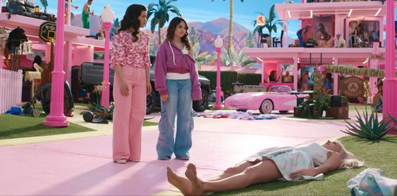

O desejo de Greta (Diretora) em ter um cenário lúdico, muito brilhante e quase exagerado,
causou uma escassez temporária a nível global de tinta rosa fluorescente da Rosco. A empresa é especialista em fornecer tintas para produções de cinema e teatro, e entregou todo o estoque para a produção do filme.
୨୧
A diretora ainda contou com diversas inspirações do cinema para criar Barbie. Ela compartilhou uma lista com 33 filmes que serviram de referência e estímulo para o live-action, que inclui filmes como O Mágico de Oz, Cantando na Chuva, O Show de Truman, Tempos Modernos, e, é claro, 2001: Uma Odisseia no Espaço, que inspirou um o primeiro teaser do longa.
୨୧
Os pés da Barbie não foram criados com computação gráfica. Esse é um dos momentos que mais chamaram atenção desde o trailer, fazendo referência às bonecas que tem os pés levantados para calçarem melhor os sapatos. Segundo Margot, foram necessárias oito tomadas para gravar a cena, já que a atriz quis que tudo fosse natural, se sustentando na ponta dos pés, sem efeitos.
୨୧
Além de todas as referências à filmes e ícones importantes da cultura pop e história da Barbie, o longa faz uma singela homenagem para Marilyn Monroe. A boneca desce flutuando de sua casa e “cai” no carro, enquanto seu vestido se levanta de forma exatamente igual ao de Marilyn no filme O Pecado Mora ao Lado.

Análise Crítica
No filme dirigido por Greta Gerwig, temas feministas, de construção social e existencialistas são explorados profundamente. Ao contrário da visão superficial frequentemente associada à boneca, o filme lança um olhar crítico sobre os construtos de gênero, expondo as dicotomias de uma sociedade patriarcal representada pelo mundo real e uma sociedade matriarcal retratada pelo mundo da Barbie.
Enquanto alguns críticos interpretaram o filme como uma sátira ao capitalismo,sua verdadeira essência reside na análise perspicaz das expectativas e pressões colocadas sobre as mulheres e homens em ambas as realidades. Ao combinar elementos metafóricos e representações literais,
Gerwig criou uma obra que desafia convenções e questiona as normas de gênero profundamente enraizadas em nossa sociedade.